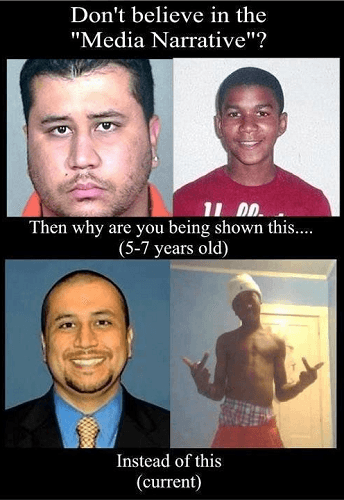
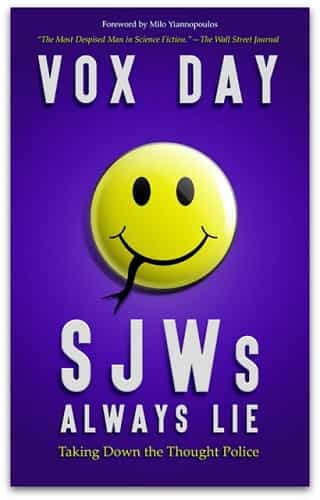

As nearly everyone who is red-pilled knows, SJWs, progressives, and leftists in general are all too often liars and twisters of the truth. Indeed, the Left not only thrives on inconsistency and double-standards, but also on deception, obfuscation, and misdirection. And this claim holds true whether the progressive-leftists in question are professionals, such as media personalities and politicians, or merely progressive morons on the internet.
In light of this truth, it is imperative for individuals on the political-right—especially for those who are new to the culture wars—to understand how this sort of lying can be done. After all, to be forewarned is to be forearmed.
Now, in my experience in law enforcement, there exist five main types of lies. In fact, all the lies that people tell can be fit into one of these five categories, or a combination thereof, and progressive-leftists are not unique in this regard. So let us thus examine these five types of lies in order to better understand how they are used against the political-right on a day-to-day basis by the leftwing media, academia, and politicians.

Lies of fabrication—also called lies of deceit—are self-explanatory. These are the lies that are completely fake. They are the stories made out of whole cloth. They are the lies of black propaganda. And they are also the lies that are the very hardest to use given that their complete falsehood can be relatively easily discovered—especially in the age of the internet.
Now, in fairness to progressives and SJWs, lies of fabrication are also the lies that are least used by them. And this especially true in the case of professional progressives, such as the media, because if they were caught in a lie of fabrication, then an almost fatal amount of their credibility would be lost—and they actually are smart enough to know this.
However, while lies of deceit are not normally used by such progressive groups as the leftwing media directly, it is nevertheless true that there are indirect ways for professional progressives to use such lies.
For example, when the leftwing media reports what an “anonymous” source says, it is patently obvious that the anonymous source could very well be fabricating his entire story, but the media has plausible deniability when they report the story through the filter of such a “source”. So while direct lies of fabrication might not be used by such left-leaning outlets as the mainstream media, they are often used in an indirect fashion by such groups. Consequently, anytime a progressive has even a fig-leaf of plausible deniability, then know that there is a very real possibility that you are being potentially fed with an indirect lie of fabrication.
If only it was this easy to recognize.
This is the type of lie where a person simply claims that they were not involved in a certain event or incident, even though they were. In the political arena, this type of lie is most often used to deny a past statement or claim. And that is how many progressives and SJWs employ this lie.
For example, if you are having a discussion with a SJW, and the SJW suddenly moves the goal-posts of the discussion, do not be surprised if the SJW outright denies that he has shifted the goal-posts or changed the subject when you call him out on this maneuver.
Even if the SJW’s maneuver is obvious, not only will the SJW often deny that he has employed such a move, but the SJW might even double-down on his denial, thus making it an even more shocking kind of lie than it normally would be. In the end, though, this is not as shocking as it seems; after all, as the saying goes, SJWs always lie.

Within the last few years, everyone no doubt remembers reading some media article, and immediately noticing that a very relevant fact concerning that article—perhaps the ethnicity of an assailant or the fact that the article is based on unconfirmed anonymous sources—is buried in the last few paragraphs of the article. Or maybe the article is fully transparent, but the article itself is buried on page fifteen of the newspaper when it should be on page one. This is lying by minimization.
In this type of lie, the offender takes some relevant fact or point, and then tries to make that fact seem as unimportant as possible. It is not omitting the fact, but it is trying to undermine the fact’s importance or relevance through the way that the fact is framed, or articulated, or presented.
For example, did a Muslim slash someone’s throat? Well, if such an incident is reported as a mere “assault”, then such a report is not actually false, nor is it an omission, but it is a lie of minimization. And unlike lies of fabrication, lies of minimization are used by progressive-leftists all the time, especially when reporting on negative things which other progressive-leftists have done or when reporting on facts which harm the progressive narrative. As such, this is one type of lie to always watch out for when reading or listening to any SJW or progressive discuss his side’s own follies.

The opposite of minimizing a fact is exaggerating a fact, and lies of exaggeration are the left’s primary form of lie when speaking about anyone on the right of the political spectrum.
For example, did some no-name skinhead white supremacist murder his girlfriend in a domestic dispute? Well, don’t be surprised if some leftist think-tank suddenly counts such an incident as an example of right-wing terrorism. Is some right-wing personality merely a libertarian or even a centrist? Well, don’t be surprised if that person is labeled by the progressive-left as ‘extremely far-right’ or a ‘neo-Nazi’. Of course, all these leftist claims are absurd, but that is the point. The leftist is exaggerating for effect.
Such exaggerations are a clear form of lying when done deliberately. And apart from the progressive true-believers who are forty paces to the left of Marx, many forked-tongue progressive-leftists know exactly what they are doing when they exaggerate their claims against the political-right.
Here is, arguably, the type of lie that the progressive-left uses the most in general situations. For example, every day on the internet you will find some progressive-Christian providing a short scriptural verse to support his point, but “strangely”, the progressive-Christian leaves out the greater context of the whole chapter. Of course, once the whole scriptural chapter is read, it completely undermines the progressive-Christian’s selective quoting. And so, this is just plain old lying by omission.
Furthermore, we all know how often such lying happens in the media when they, for example, neglect to report—at least until it can no longer be avoided—that some terrorist attacker is a Muslim or a recently arrived refugee. After all, it is almost a humorous truism that when the Western European media, for example, reports that a gang of “Asian youths” assaulted someone, what they actually mean is that a bunch of Muslims caused yet another riot, but they are trying to omit that fact by covering it up with more acceptable terminology.
Or when some progressive-leftist claims that more Americans have been killed by right-wing terrorists than by Islamists—a claim that is false—these progressive-leftists often omit to mention that they start counting their statistics one day after 9/11, or that their statistics fail to take into account the most recent terrorist attacks committing by Islamists in America, or so on and so forth. Again, all lies by omission.
In fact, lies by omission are so often used by the progressive-left that whenever reading or listening to some leftwing media source, always watch for what is not being said. Often, what is being omitted will speak louder than what is actually being stated.
So, these are the five main types of lies. They can, of course, be combined. They can also be used by anyone, but they are very often used—in a deliberate manner—by those on the political-left. Remember these types of lies. Know how to spot them. And always be on your guard for them whenever you are receiving information from anyone on the progressive-left.
Read More: How The Media Lies Through Omission And Distortion